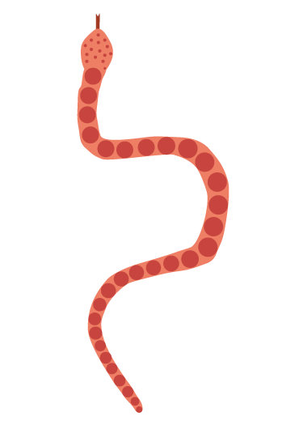

SLANGE
Vægt: Op til 45 kg, men normalt kun 27 kg.
Længde: Mellem 1,5 og 2,5 meter.
Levealder: Op til 20 år
Føde: Øgler, fugle, gnavere, aber, til tider vildsvin.
Levesteder: Mellem- og Sydamerika.
Sjove facts om slangen
Slanger sluger alle deres byttedyr hele og er i stand til at indtage dyr, der er 3 gange større end deres eget hoved.
Slanger behøver ikke at jage hver dag; nogle arter kan (efter et stort måltid) overleve i op til 1 år uden føde
Slanger lugter ved at stikke deres splittede tunge ud i luften.
Slanger skifter ham (skind) op til 6 gange pr. år.